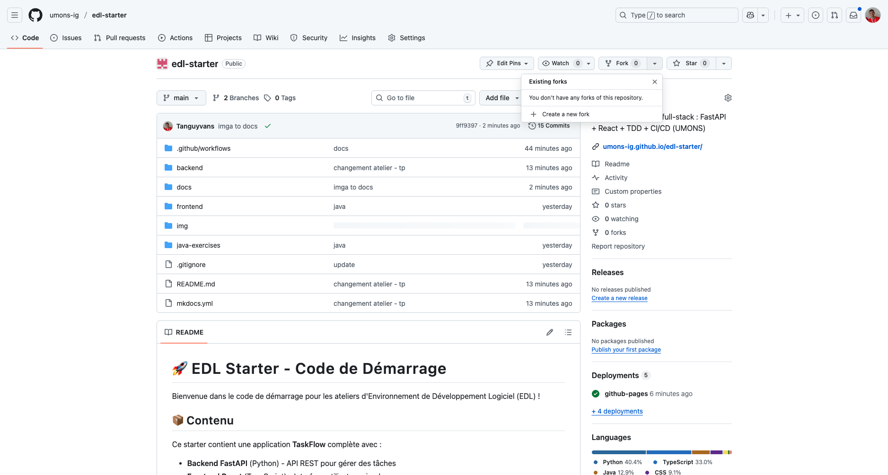
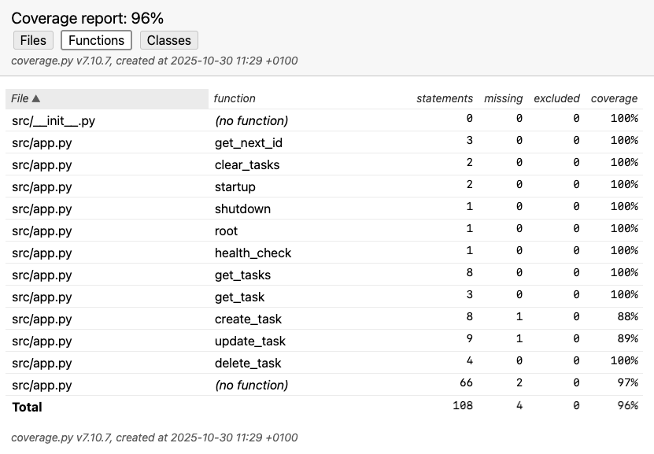

üéì TP 1 : Tests Unitaires Backend & Frontend¶
Objectif : Apprendre les tests unitaires avec Python (pytest) et TypeScript (Vitest)
Phase 1 : Installation & Configuration¶
√âtape 1.1 : Forker le D√©p√¥t¶
- Allez sur
https://github.com/umons-ig/edl-starter - Cliquez sur "Fork"

- Clonez votre fork :
√âtape 1.2 : Installer les D√©pendances Python (2 Options)¶
Option A : Avec UV (Recommandé - Plus Rapide) ⚡
UV est un gestionnaire de paquets Python moderne et ultra-rapide.
Installation UV :
macOS/Linux :
Windows :
Installer les dépendances :
Option B : Avec pip (Classique) üêç
Si vous préférez pip ou avez déjà Python installé :
cd backend
python -m venv .venv
source .venv/bin/activate # Windows: .venv\Scripts\activate
pip install -r requirements.txt
Dans le reste de l'atelier :
- Si vous utilisez UV :
uv run pytest - Si vous utilisez pip :
pytest
Phase 2 : Explorer l'Application¶
√âtape 2.1 : Lancer le Serveur¶
√âtape 2.2 : Tester dans le Navigateur¶
Visitez :
- API : http://localhost:8000
- Documentation interactive : http://localhost:8000/docs
- Santé : http://localhost:8000/health
√âtape 2.3 : Tester avec Swagger UI¶
- Allez sur http://localhost:8000/docs
- Cliquez sur POST /tasks
- Cliquez sur "Try it out"
- Entrez :
- Cliquez sur "Execute"
- Vous devriez voir un code
201 Created
√âtape 2.4 : Explorer le Code¶
Ouvrez backend/src/app.py dans votre éditeur :
- Lignes 27-36 : Énumérations (TaskStatus, TaskPriority)
- Lignes 39-68 : Modèles Pydantic
- Lignes 76-77 : Stockage en mémoire (dictionnaire simple)
- Lignes 180-205 : Endpoint pour créer une tâche
- Lignes 144-160 : Endpoint pour lister les tâches
Important : Ce backend utilise un stockage en mémoire (un simple dictionnaire Python) pour les TP 1 & 2. Vous utiliserez PostgreSQL dans le TP 3.
Phase 3 : Comprendre les Tests¶
√âtape 3.1 : Explorer les Fichiers de Test¶
Ouvrez ces fichiers :
backend/tests/conftest.py→ Fixtures de testbackend/tests/test_api.py→ Tests
√âtape 3.2 : Qu'est-ce qu'une Fixture ?¶
Dans conftest.py, regardez :
@pytest.fixture(autouse=True)
def clean_tasks():
"""Nettoie les tâches avant et après chaque test"""
clear_tasks()
yield
clear_tasks()
@pytest.fixture
def client():
"""Fournit un client HTTP de test"""
with TestClient(app) as test_client:
yield test_client
Pourquoi c'est utile ?
clean_tasks: Nettoie automatiquement le stockage en mémoire avant chaque testclient: Vous n'avez pas à créer un client dans chaque test- pytest les injecte automatiquement quand vous écrivez
def test_xxx(client):
√âtape 3.3 : Lancer les Tests Existants¶
Vous devriez voir :
tests/test_api.py::test_root_endpoint PASSED
tests/test_api.py::test_health_check PASSED
tests/test_api.py::test_create_task PASSED
tests/test_api.py::test_list_tasks PASSED
tests/test_api.py::test_get_task_by_id PASSED
... (19 tests au total)
========== 19 passed in 0.45s ==========
√âtape 3.4 : Comprendre un Test¶
Regardez test_create_task dans test_api.py :
def test_create_task(client):
# ARRANGE : Préparer les données
new_task = {
"title": "Acheter des courses",
"description": "Lait, œufs, pain"
}
# ACT : Faire la requête
response = client.post("/tasks", json=new_task)
# ASSERT : Vérifier
assert response.status_code == 201
assert response.json()["title"] == "Acheter des courses"
Pattern Arrange-Act-Assert :
- Arrange → Préparer
- Act → Agir
- Assert → Vérifier
Phase 4 : Impl√©menter les Fonctions Backend¶
‚úçÔ∏è Exercice 1 : Impl√©menter delete_task()¶
üéØ Objectif : Compl√©ter la fonction delete_task() dans backend/src/app.py
Ouvrez backend/src/app.py et trouvez la fonction delete_task() (ligne ~240).
Les tests existent déjà ! Regardez dans test_api.py :
test_delete_task: Supprime une tâche et vérifie qu'elle a disparutest_delete_nonexistent_task: Vérifie le 404
Votre mission :
Implémentez les 3 étapes décrites dans le TODO :
@app.delete("/tasks/{task_id}", status_code=204)
async def delete_task(task_id: int):
# TODO: Votre code ici
# 1. Vérifier que la tâche existe
# 2. La supprimer de tasks_db
# 3. Retourner None
Vérifier votre code :
✅ Si le test passe → Bravo !
❌ Si le test échoue → Lisez l'erreur et corrigez
‚úçÔ∏è Exercice 2 : Impl√©menter update_task()¶
üéØ Objectif : Compl√©ter la fonction update_task() dans backend/src/app.py
Trouvez la fonction update_task() (ligne ~207).
Les tests existent déjà ! Regardez :
test_update_task: Change le titre d'une tâchetest_update_task_status: Change le statuttest_update_nonexistent_task: Vérifie le 404
Votre mission :
Implémentez les 7 étapes décrites dans le TODO.
Indices :
- C'est similaire à
create_taskmais avec une tâche existante - Utilisez
updates.model_dump(exclude_unset=True)pour obtenir les champs fournis - Utilisez
update_data.get("field", existing_task.field)pour garder les anciennes valeurs si non mises à jour
Vérifier votre code :
‚úçÔ∏è Exercice 3 : √âcrire un Test de Suppression Inexistante¶
üéØ Objectif : Tester qu'on ne peut pas supprimer une tâche qui n'existe pas
Ouvrez backend/tests/test_api.py et trouvez la section DELETE TASK TESTS.
Ajoutez ce test après test_delete_task :
def test_delete_nonexistent_task_returns_404(client):
"""Deleting a task that doesn't exist should return 404."""
# TODO: Votre code ici
# 1. Essayer de supprimer une tâche avec un ID qui n'existe pas (ex: 9999)
# 2. Vérifier que ça retourne 404
# 3. Vérifier le message d'erreur contient "not found"
Vérifier :
‚úçÔ∏è Exercice 4 : √âcrire un Test de Validation¶
üéØ Objectif : Tester qu'on ne peut pas mettre √† jour une tâche avec une priorit√© invalide
Ouvrez backend/tests/test_api.py et trouvez la fonction test_update_task_with_invalid_priority.
def test_update_task_with_invalid_priority(client):
"""Updating a task with an invalid priority should fail."""
# TODO: Votre code ici
# 1. Créer une tâche valide
# 2. Essayer de la mettre à jour avec priority="urgent" (invalide)
# 3. Vérifier que ça retourne 422 (Erreur de Validation)
Rappel : Les priorités valides sont "low", "medium", "high" (voir TaskPriority dans app.py)
Vérifier :
‚úçÔ∏è Exercice 5 : √âcrire un Test de Filtrage¶
üéØ Objectif : Tester le filtrage avec plusieurs crit√®res
Ajoutez ce test dans la section FILTER TASKS TESTS :
def test_filter_by_multiple_criteria(client):
"""Filtering by status AND priority should work."""
# TODO: Votre code ici
# 1. Créer 3 tâches avec différents status et priority
# 2. Filtrer avec GET /tasks?status=todo&priority=high
# 3. Vérifier qu'on reçoit seulement les bonnes tâches
Vérifier :
√âtape 4.6 : Lancer TOUS les Tests¶
Une fois que vous avez terminé les 5 exercices, lancez tous les tests :
Résultat attendu :
tests/test_api.py::test_root_endpoint PASSED
tests/test_api.py::test_health_check PASSED
tests/test_api.py::test_create_simple_task PASSED
...
tests/test_api.py::test_delete_task PASSED
tests/test_api.py::test_update_task PASSED
tests/test_api.py::test_delete_nonexistent_task_returns_404 PASSED
tests/test_api.py::test_update_task_with_empty_title PASSED
tests/test_api.py::test_filter_by_multiple_criteria PASSED
...
========== 22+ passed in 0.5s ==========
üéâ Tous les tests passent ? Vous avez r√©ussi !
Phase 5 : Couverture de Code¶
√âtape 5.1 : Lancer les Tests avec Couverture¶
Résultat :
---------- coverage: platform darwin, python 3.12.7 -----------
Name Stmts Miss Cover
---------------------------------------
src/app.py 156 6 96%
---------------------------------------
TOTAL 156 6 96%

√âtape 5.2 : G√©n√©rer un Rapport HTML¶
Ouvrir le rapport :
Phase 6 : Tests Frontend¶
√âtape 6.1 : Comprendre le Frontend et Pourquoi Tester¶
Le frontend est une application React + TypeScript simple qui communique avec le backend.
Structure :
frontend/
├── src/
│ ├── App.tsx # Composant principal
│ ├── App.css # Styles simples
│ ├── api/
│ │ ├── api.ts # Client API
│ │ └── api.test.ts # Tests API ← ON TESTE ÇA
│ └── components/
│ ├── SimpleTaskList.tsx
│ └── TaskForm.tsx
└── package.json
ü§î Pourquoi Tester le Frontend ?¶
1. Vérifier la Communication avec le Backend
Les tests frontend vérifient que votre code JavaScript/TypeScript communique correctement avec l'API backend :
- ✅ Les requêtes HTTP sont-elles correctement formées ? (bonne URL, bonne méthode, bon format)
- ✅ Les données sont-elles correctement envoyées ? (body JSON valide)
- ✅ Les réponses sont-elles correctement traitées ? (parsing JSON, extraction des données)
- ✅ Les erreurs sont-elles gérées ? (404, 500, network errors)
2. Tester Sans Dépendre du Backend
Grâce au mocking, on peut tester le frontend même si :
- ❌ Le backend n'est pas encore développé
- ❌ Le backend est en panne
- ❌ On n'a pas de connexion Internet
- ❌ On veut tester des cas d'erreur difficiles à reproduire
Exemple : Comment tester une erreur 500 sans crasher votre vrai backend ? → Avec un mock !
3. Tests Rapides et Fiables
- ⚡ Rapides : Pas besoin de lancer un vrai serveur
- üîí Isol√©s : Pas d'effets de bord entre les tests
- üéØ Pr√©cis : On teste uniquement la logique frontend
üì¶ Qu'est-ce qu'on Teste ?¶
Dans cet atelier, on teste uniquement le module API (api.ts), pas les composants React.
Pourquoi ne pas tester les composants React ?
- Les tests de composants React nécessitent des outils supplémentaires (React Testing Library)
- C'est plus complexe (gestion du DOM, événements, état)
- Pour le TP 1, on se concentre sur les concepts de base des tests
Ce qu'on teste dans api.ts :
| Fonction | Ce qu'elle fait | Ce qu'on vérifie |
|---|---|---|
getTasks() |
Récupère la liste des tâches | Retourne un tableau de tâches |
createTask() |
Crée une nouvelle tâche | Envoie les bonnes données en POST |
deleteTask() |
Supprime une tâche | Appelle DELETE avec le bon ID |
updateTask() |
Met à jour une tâche | Envoie PUT avec les modifications |
üé≠ Le Concept de Mocking¶
Problème : Comment tester du code qui appelle une API externe ?
Solution : On simule (mock) la fonction fetch() pour qu'elle retourne ce qu'on veut !
// Au lieu d'appeler le vrai backend...
fetch('http://localhost:8000/tasks')
// ...on remplace fetch par une fausse version qui retourne ce qu'on veut
(globalThis as any).fetch = vi.fn(() =>
Promise.resolve({
ok: true,
json: () => Promise.resolve([{ id: 1, title: 'Test' }])
})
);
Avantages :
- ✅ Pas besoin du vrai backend
- ✅ Contrôle total sur les réponses (succès, erreurs, cas limites)
- ✅ Tests ultra-rapides
üî¨ D√©corticage Ligne par Ligne du Mock¶
Analysons en détail ce code de mocking qui peut sembler complexe au premier abord :
(globalThis as any).fetch = vi.fn(() =>
Promise.resolve({
ok: true,
json: () => Promise.resolve([
{ id: 1, title: 'Test Task', status: 'todo' }
]),
})
);
Ligne 1 : Remplacer la vraie fonction fetch()
| Élément | Explication |
|---|---|
globalThis |
Objet JavaScript global (équivalent de window dans le navigateur) |
.fetch |
La vraie fonction qui fait les requêtes HTTP |
vi.fn(...) |
Crée une fonction "espion" (mock) de Vitest |
(globalThis as any) |
TypeScript : on force le type pour pouvoir modifier fetch |
Ce qu'on fait : On remplace la vraie fetch() par une fausse version qu'on contrôle !
Ligne 2 : Simuler une Promesse réussie
fetch()retourne toujours une Promise (asynchrone)Promise.resolve()simule une promesse qui réussit immédiatement- On pourrait utiliser
Promise.reject()pour simuler une erreur réseau
Ligne 3-7 : Simuler la réponse HTTP
{
ok: true, // ✅ Statut de la réponse
json: () => Promise.resolve([...]) // üì¶ Les donn√©es JSON
}
| Propriété | Valeur | Signification |
|---|---|---|
ok |
true |
La requête HTTP a réussi (status 200-299) |
ok |
false |
La requête a échoué (status 400-599) |
json() |
Une fonction qui retourne une Promise | Simule response.json() |
Pourquoi json() est une fonction ?
Le vrai fetch() fonctionne comme ça :
const response = await fetch('/tasks'); // Étape 1 : Obtenir la réponse
const data = await response.json(); // Étape 2 : Parser le JSON
Notre mock doit imiter exactement ce comportement !
Ligne 4-6 : Les données retournées
C'est le tableau de tâches fictif que notre mock va retourner. On peut mettre ce qu'on veut !
üé® Exemples de Mocks pour Diff√©rents Cas¶
1️⃣ Mock pour un Succès (200 OK)
(globalThis as any).fetch = vi.fn(() =>
Promise.resolve({
ok: true,
status: 200,
json: () => Promise.resolve({ id: 1, title: 'Ma tâche' })
})
);
2️⃣ Mock pour une Erreur 404 (Not Found)
(globalThis as any).fetch = vi.fn(() =>
Promise.resolve({
ok: false,
status: 404,
statusText: 'Not Found'
})
);
3️⃣ Mock pour une Erreur 500 (Server Error)
(globalThis as any).fetch = vi.fn(() =>
Promise.resolve({
ok: false,
status: 500,
statusText: 'Server Error'
})
);
4️⃣ Mock pour une Erreur Réseau (pas de connexion)
‚ùì Questions Fr√©quentes sur le Mocking¶
Q : Pourquoi (globalThis as any) ?
R : TypeScript protège globalThis.fetch contre les modifications. as any dit à TypeScript "Fais-moi confiance, je sais ce que je fais !" C'est normal dans les tests.
Q : Pourquoi vi.fn() au lieu d'une fonction normale ?
R : vi.fn() crée un spy (espion). On peut ensuite vérifier :
Avec une fonction normale, on ne pourrait pas faire ça !
Q : Dois-je mocker fetch() dans chaque test ?
R : OUI ! Chaque test est isolé. Si vous ne mocker pas fetch(), le test essaiera d'appeler le vrai backend et échouera.
Q : Le mock persiste-t-il entre les tests ?
R : Non, Vitest réinitialise les mocks automatiquement entre chaque test. C'est pour garantir l'isolation des tests.
üéØ R√©capitulatif¶
| Concept | Signification |
|---|---|
| Mock | Fausse version d'une fonction qu'on contrôle |
globalThis.fetch |
La vraie fonction HTTP qu'on remplace |
vi.fn() |
Crée un mock espion (peut être vérifié) |
Promise.resolve() |
Simule une promesse qui réussit |
ok: true |
Simule un succès HTTP (200-299) |
json() |
Fonction qui retourne les données JSON |
Important : On teste uniquement l'API (pas les composants React) pour rester simple.
√âtape 6.2 : Installer les D√©pendances Frontend¶
Cela va installer toutes les dépendances définies dans package.json.
√âtape 6.3 : Lancer les Tests Frontend¶
Vous devriez voir :
✓ src/api/api.test.ts (3 tests) 4ms
✓ fetches tasks from the backend
✓ creates a new task
✓ throws error when API fails
Test Files 1 passed (1)
Tests 3 passed (3)
√âtape 6.4 : Analyser les Tests en D√©tail¶
Ouvrez frontend/src/api/api.test.ts et analysons ligne par ligne comment fonctionne un test :
describe('API Module', () => {
it('fetches tasks from the backend', async () => {
// ÉTAPE 1 : Mock fetch pour simuler la réponse du backend
(globalThis as any).fetch = vi.fn(() =>
Promise.resolve({
ok: true,
json: () => Promise.resolve([
{ id: 1, title: 'Test Task', status: 'todo' }
]),
})
);
// ÉTAPE 2 : Appeler la fonction à tester
const tasks = await api.getTasks();
// ÉTAPE 3 : Vérifier les résultats
expect(tasks).toHaveLength(1);
expect(tasks[0].title).toBe('Test Task');
});
});
üîç Explication D√©taill√©e¶
ÉTAPE 1 : Pourquoi mocker fetch() ?
globalThis.fetch= la fonction JavaScript qui fait les requêtes HTTPvi.fn()= remplace fetch par une fausse version (mock) de Vitest- On contrôle ce qu'elle retourne → pas d'appel réseau réel
Ce que le mock retourne :
Promise.resolve({
ok: true, // ✅ Requête réussie (pas d'erreur)
json: () => Promise.resolve([...]) // Les données JSON à retourner
})
C'est exactement ce que le vrai fetch() retournerait, mais sans réseau !
ÉTAPE 2 : Appeler la fonction
- Appelle la vraie fonction
getTasks()de notre API - Cette fonction utilise
fetch()en interne - Mais
fetch()est maintenant notre mock → retourne instantanément les données fictives
ÉTAPE 3 : Vérifier les résultats
expect(tasks).toHaveLength(1); // ✅ On a bien reçu 1 tâche
expect(tasks[0].title).toBe('Test Task'); // ✅ Le titre est correct
üìä Comparaison Backend vs Frontend¶
| Aspect | Tests Backend (pytest) | Tests Frontend (Vitest) |
|---|---|---|
| Framework | pytest | Vitest |
| Langage | Python | TypeScript |
| Assertions | assert response.status_code == 200 |
expect(response.ok).toBe(true) |
| Mocking | Fixtures (client) |
vi.fn() |
| Asynchrone | Pas nécessaire (FastAPI le gère) | async/await obligatoire |
| Pattern | Arrange-Act-Assert | Arrange-Act-Assert (identique!) |
La bonne nouvelle : Les concepts sont identiques entre backend et frontend !
üéØ Les 5 Tests Expliqu√©s¶
| Test | Objectif | Ce qu'on vérifie |
|---|---|---|
Test 1 : fetches tasks |
Récupérer des tâches | ✅ Reçoit un tableau avec les bonnes données |
Test 2 : creates a new task |
Créer une tâche | ✅ Envoie POST avec les bonnes données |
Test 3 : throws error when API fails |
Gestion d'erreur | ✅ Lève une exception si le backend répond 500 |
Test 4 : deletes a task |
Supprimer une tâche | ✅ Appelle DELETE avec le bon ID |
Test 5 : updates a task |
Mettre à jour une tâche | ✅ Envoie PUT avec les modifications |
Pourquoi ces tests sont importants ?
- üêõ D√©tecter les bugs : Si on change l'URL de l'API, les tests √©chouent
- üîí Garantir la qualit√© : Les nouvelles fonctionnalit√©s ne cassent pas l'existant
- üìñ Documentation vivante : Les tests montrent comment utiliser l'API
√âtape 6.5 : Couverture Frontend¶
Résultat :
File | % Stmts | % Branch | % Funcs | % Lines |
-----------|---------|----------|---------|---------|
api.ts | 68.42 | 55.55 | 50 | 68.42 |
Note : On teste uniquement l'API (pas les composants React).
√âtape 6.6 : Comprendre un Test Existant¶
Avant d'écrire votre test, analysons comment fonctionne le test creates a new task :
it('creates a new task', async () => {
// 1. ARRANGE : Préparer les données
const newTask = { title: 'New Task', status: 'todo' as const };
// 2. ARRANGE : Mocker fetch pour simuler la réponse du backend
(globalThis as any).fetch = vi.fn(() =>
Promise.resolve({
ok: true,
json: () => Promise.resolve({ ...newTask, id: 1 }),
})
);
// 3. ACT : Appeler la fonction à tester
const created = await api.createTask(newTask);
// 4. ASSERT : Vérifier les résultats
expect(created.id).toBe(1);
expect(created.title).toBe('New Task');
});
Que fait ce test ?
- Arrange : Prépare les données (newTask) et mock fetch
- Act : Appelle
api.createTask() - Assert : Vérifie que la tâche créée a bien un ID et le bon titre
Pattern AAA - le m√™me qu'en Python ! üéØ
‚úçÔ∏è Exercice 6 : √âcrire un Test Frontend (10 min)¶
üéØ Objectif : Tester la fonction deleteTask() du module API
Ouvrez frontend/src/api/api.test.ts et trouvez le test marqué it.todo(...) :
it.todo('deletes a task', async () => {
// TODO: Votre code ici
// 1. Mocker fetch pour simuler une suppression réussie (status: 204)
// 2. Appeler await api.deleteTask(1)
// 3. Vérifier que fetch a été appelé avec la bonne URL et méthode DELETE
});
Votre mission : Implémentez ce test en suivant les 3 étapes !
Indice : Regardez le test creates a new task juste au-dessus pour vous inspirer.
Vérifier votre test :
✅ Si le test passe → Bravo ! Vous devriez voir 4 tests passed au lieu de 3 !
❌ Si le test échoue → Lisez l'erreur et corrigez
‚úçÔ∏è Exercice 7 : √âcrire un Test UPDATE Frontend (10 min)¶
üéØ Objectif : Tester la fonction updateTask() du module API
Dans frontend/src/api/api.test.ts, trouvez le deuxième test marqué it.todo(...) :
it.todo('updates a task', async () => {
// TODO: Votre code ici
// 1. Mocker fetch pour simuler une mise à jour réussie
// 2. Appeler await api.updateTask(1, { title: 'Updated Title' })
// 3. Vérifier que fetch a été appelé avec la bonne URL, méthode PUT et body
});
Votre mission : Implémentez ce test en suivant les 3 étapes !
Indices :
- C'est similaire au test DELETE, mais avec méthode
PUTau lieu deDELETE - Il faut aussi vérifier le
bodycontient les bonnes données - Le mock fetch doit retourner un objet avec
json()(comme danscreates a new task)
Vérifier votre test :
✅ Si le test passe → Bravo ! Vous devriez voir 5 tests passed !
❌ Si le test échoue → Lisez l'erreur et corrigez
√âtape 6.7 : V√©rifier la Couverture¶
Résultat :
File | % Stmts | % Branch | % Funcs | % Lines |
-----------|---------|----------|---------|---------|
api.ts | 84.21 | 66.67 | 71.43 | 84.21 |
La couverture a augment√© grâce √† vos tests ! üéâ
√âtape 6.8 : Lancer l'Application Compl√®te¶
Terminal 1 - Backend :
Terminal 2 - Frontend :
Ouvrir dans le navigateur : http://localhost:5173
Vous devriez voir l'application TaskFlow fonctionner :
üéÅ Exercices Bonus : Java avec JUnit¶
Objectif : Voir que les principes de TDD s'appliquent à tous les langages !
Les exercices Java sont dans le dossier java-exercises/.
Pr√©requis : Installer Java¶
Si pas installé :
- macOS :
brew install openjdk@17 - Linux :
sudo apt install openjdk-17-jdk - Windows : Installer depuis adoptium.net
Commandes de base :
Chaque exercice utilise un Makefile pour simplifier la compilation et l'exécution :
make test # Compiler + Exécuter les tests + Nettoyer
make compile # Compiler uniquement
make clean # Supprimer les fichiers .class
‚úçÔ∏è Exercice 1 : Calculs G√©om√©triques (Composition de Fonctions)¶
üéØ Objectif : Impl√©menter des op√©rations math√©matiques en composant des fonctions simples
Ouvrez le dossier edl-starter/java-exercises/calculs-geo/
Fichiers du projet :
Addition.java: Classe d'exemple déjà implémentéeProduit.java: À compléter (multiplication)Surface.java: À compléter (surface rectangle)Perimetre.java: À compléter (périmètre)- Tests :
AdditionTest.java,ProduitTest.java,SurfaceTest.java,PerimetreTest.java
Votre mission - Partie 1 : Implémenter Produit.mult()
Ouvrez Produit.java et complétez la méthode :
public class Produit {
public static int mult(int a, int b) {
// TODO: Retourner le produit de a et b
return 0;
}
}
Test correspondant (ProduitTest.java) :
@Test
public void testMult() {
assertEquals(6, Produit.mult(2, 3));
assertEquals(0, Produit.mult(0, 5));
assertEquals(-6, Produit.mult(-2, 3));
}
Indice : Utilisez l'opérateur * pour multiplier deux nombres.
Vérifier votre code :
Résultat attendu après implémentation :
Le test ProduitTest devrait maintenant passer !
Votre mission - Partie 2 : Implémenter Surface.surf()
Ouvrez Surface.java et complétez la méthode :
public class Surface {
public static int surf(int a, int b) {
// TODO: Utiliser Produit.mult() pour calculer la surface d'un rectangle
return 0;
}
}
Test correspondant (SurfaceTest.java) :
@Test
public void testSurf() {
assertEquals(6, Surface.surf(2, 3));
assertEquals(0, Surface.surf(0, 5));
assertEquals(12, Surface.surf(3, 4));
}
Indice : La surface d'un rectangle = longueur × largeur. Réutilisez la fonction Produit.mult() que vous venez d'écrire.
Exemple de solution :
Vérifier :
Maintenant 2 tests sur 4 devraient passer.
Votre mission - Partie 3 : Implémenter Perimetre.perim()
Ouvrez Perimetre.java et complétez la méthode :
public class Perimetre {
public static int perim(int a, int b, int c) {
// TODO: Calculer (a+b)*c en utilisant Addition.add() et Produit.mult()
return 0;
}
}
Test correspondant (PerimetreTest.java) :
@Test
public void testPerim() {
assertEquals(10, Perimetre.perim(2, 3, 2)); // (2+3)*2 = 10
assertEquals(0, Perimetre.perim(0, 0, 5));
assertEquals(14, Perimetre.perim(3, 4, 2)); // (3+4)*2 = 14
}
Indice :
- Commencez par additionner
aetbavecAddition.add(a, b) - Multipliez le résultat par
cavecProduit.mult()
Exemple de solution :
Vérifier :
Résultat final attendu :
Tous les tests passent ? Bravo ! Passez à l'exercice suivant.
‚úçÔ∏è Exercice 2 : Money - Addition avec Validation de Devises¶
üéØ Objectif : Impl√©menter une m√©thode d'addition qui valide que deux montants ont la m√™me devise
Ouvrez le dossier edl-starter/java-exercises/money/
Fichiers du projet :
Money.java: Classe avec méthodeadd()à implémenterMoneyTest.java: Tests JUnit (certains avec TODOs à compléter)
Votre mission :
Ouvrez Money.java et implémentez la méthode add() :
public Money add(Money m) throws Exception {
// TODO: Vérifier si this.currency().equals(m.currency())
// TODO: Si oui, retourner new Money(this.amount() + m.amount(), this.currency())
// TODO: Si non, throw new Exception("Not Same currency")
return null;
}
Règles métier :
- On peut additionner deux montants de même devise :
12 EUR + 5 EUR = 17 EUR - On ne peut PAS additionner deux montants de devises différentes :
12 EUR + 5 USD→ Exception
Tests correspondants (MoneyTest.java) :
@Test
public void testSimpleAdd() throws Exception {
Money m12EUR = new Money(12, "EUR");
Money m14EUR = new Money(14, "EUR");
Money expected = new Money(26, "EUR");
assertEquals(expected, m12EUR.add(m14EUR));
}
@Test(expected = Exception.class)
public void testAddDifferentCurrency() throws Exception {
Money m12EUR = new Money(12, "EUR");
Money m5USD = new Money(5, "USD");
m12EUR.add(m5USD); // Doit lever une exception
}
Indices :
- Utilisez
this.currency()pour obtenir la devise de l'objet courant - Utilisez
m.currency()pour obtenir la devise du paramètre - Comparez avec
.equals()(pas==) - Si les devises sont identiques, créez un nouveau
Moneyavec la somme des montants - Si les devises sont différentes, lancez une exception avec
throw new Exception("Not Same currency")
Exemple de solution :
public Money add(Money m) throws Exception {
if (this.currency().equals(m.currency())) {
return new Money(this.amount() + m.amount(), this.currency());
}
throw new Exception("Not Same currency");
}
Vérifier votre code :
Résultat attendu :
Tous les tests passent ? Félicitations !
üìö Comprendre JUnit 4 - Les Bases¶
Structure d'un test JUnit :
import org.junit.Test;
import static org.junit.Assert.*;
public class ExampleTest {
@Test
public void testMethodName() {
// Arrange : Préparer les données
int a = 2;
int b = 3;
// Act : Exécuter la méthode à tester
int result = MyClass.add(a, b);
// Assert : Vérifier le résultat
assertEquals(5, result);
}
}
Annotations JUnit :
@Test: Indique qu'une méthode est un test@Test(expected = Exception.class): Le test passe si l'exception est levée
Méthodes d'assertion principales :
assertEquals(expected, actual); // Vérifie que deux valeurs sont égales
assertTrue(condition); // Vérifie qu'une condition est vraie
assertFalse(condition); // Vérifie qu'une condition est fausse
assertNull(object); // Vérifie qu'un objet est null
assertNotNull(object); // Vérifie qu'un objet n'est pas null
Exemple de test d'exception :